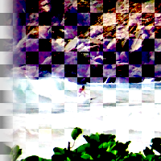

Reinhard 2005 Tone Mapping
Adapt an image, which may have a high dynamic range, for presentation using a low dynamic range. This is an efficient global operator derived from simple physiological observations, producing luminance within the range 0.0-1.0
Brightness
Overall brightness of the image
name: brightness
type: double
default: 0.00
minimum: -100.00
maximum: 100.00
ui-minimum: -100.00
ui-maximum: 100.00
ui-gamma: 1.00
ui-step-small: 1.00
ui-step-big: 10.00
ui-digits: 2
Chromatic adaptation
Adaptation to color variation across the image
name: chromatic
type: double
default: 0.00
minimum: 0.00
maximum: 1.00
ui-minimum: 0.00
ui-maximum: 1.00
ui-gamma: 1.00
ui-step-small: 0.00
ui-step-big: 0.10
ui-digits: 3
Light adaptation
Adaptation to light variation across the image
name: light
type: double
default: 1.00
minimum: 0.00
maximum: 1.00
ui-minimum: 0.00
ui-maximum: 1.00
ui-gamma: 1.00
ui-step-small: 0.00
ui-step-big: 0.10
ui-digits: 3
pads: input output
parent-class: GeglOperationFilter
categories: tonemapping
source: operations/common/reinhard05.c
 This page is part of the online GEGL Documentation, GEGL is a data flow based image processing library/framework, made to fuel GIMPs high-bit depth non-destructive editing future.
This page is part of the online GEGL Documentation, GEGL is a data flow based image processing library/framework, made to fuel GIMPs high-bit depth non-destructive editing future.